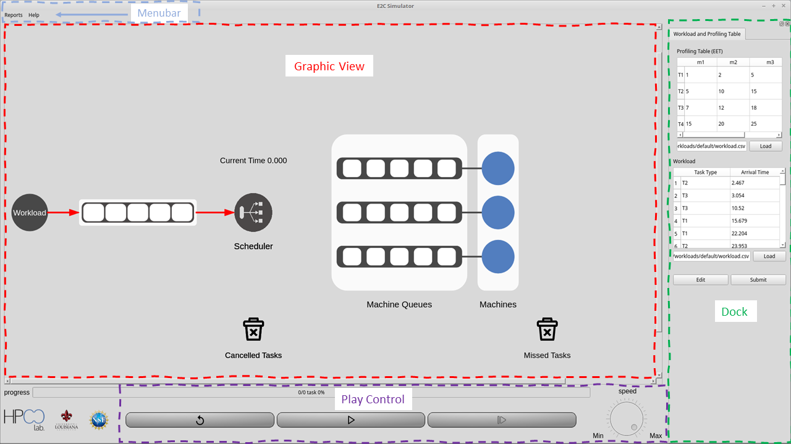

<div class="outer">

    <div class="scroll-window">

        <h1 class="section-title">Quick Start</h1>

        <p class="section-body">
            This is the E2C Simulator interface:
            <br clear="all" /> 
            
            
            
            <br clear="all" />

            Click on <b> “Workload” </b>to load expected execution times and workload CSV files.
            Based on the scheduling method, you can change the size of machine queue by clicking on the white outer frame around the machine queues. Note that for immediate scheduling policies, the machine queue size must be unlimited.
            You can also change the scheduling policy with the icon in the middle. The blue circles to the right represent the machines present. Clicking one will give information about that specific machine, which updates during the processing of the workload. The trash icons represent canceled and missed tasks. 
            The reports and help menu are found at the top left, and you may choose to save a report as a CSV file once the workload has been completed.

        </p>

        

    </div>

</div>